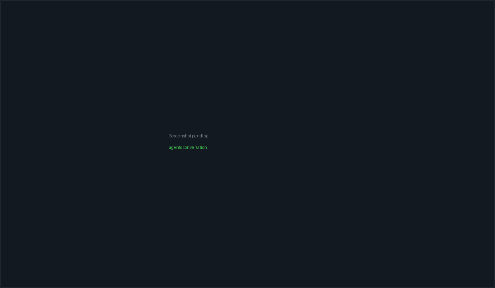

Agents & conversations#
An API agent is a structured conversation: you send a turn, the provider streams back text, thinking, tool calls, diffs and plans, and PacketBench renders all of it as reviewable cards rather than terminal scrollback. Nine provider rows run over three different transports, but they all emit the same event contract, so the interface is identical whichever one you pick.
Reach the surface from the left rail (robot icon) or with Ctrl+Shift+1. The PacketCode ACP route is the same surface pinned to one provider, on Ctrl+Shift+6.

A running conversation: sidebar on the left, transcript with tool cards in the middle, and the Diff panel open in the right dock.
The nine provider rows#
| Row (as shown in the picker) | AgentCli id |
Backend | Credential |
|---|---|---|---|
| Claude Agent SDK (API) | api-claude-oauth |
Node sidecar → Claude Agent SDK | keyring api-key-anthropic |
| Claude (API) | api-claude |
Rust LlmProvider, in-process |
keyring api-key-anthropic |
| OpenAI (API) | api-openai |
Rust LlmProvider |
keyring api-key-openai |
| OpenAI Agents SDK (API) | api-openai-agents |
Node sidecar → OpenAI Agents SDK | keyring api-key-openai |
| MiniMax (Token Plan) | api-minimax |
Rust LlmProvider |
keyring api-key-minimax |
| OpenRouter | api-openrouter |
Rust LlmProvider |
keyring api-key-openrouter |
| Ollama (Local) | api-ollama |
Rust LlmProvider |
none — HTTP probe on localhost:11434 |
| PacketCode (ACP) | api-packetcode |
ACP → PacketCode engine subprocess | none — the engine owns its own credentials |
| Custom endpoint (OpenAI-compatible) | api-custom |
Rust LlmProvider |
none required |
The picker groups them as Anthropic (the two Claude rows), OpenAI (the two OpenAI rows) and Other (the remaining five).
api-claude-oauth is a historical id, not an OAuth row.
It is the Claude Agent SDK authenticated with your Anthropic API key.
Anthropic prohibits routing Free/Pro/Max subscription credentials through
third-party products, so the SDK stayed and only the credential moved. The id
is unchanged because persisted conversations store it and resume with it
verbatim. No API row in PacketBench uses a Claude.ai or ChatGPT subscription
login.
PTY terminal panes are unaffected by any of this. claude and
codex CLI sessions keep their own subscription logins — that is ordinary
end-user use of those tools. See Workspaces & terminals.
Model catalogues#
| Provider | Models offered (first is the default) |
|---|---|
| Claude Agent SDK | Claude Opus 4.8, Opus 4.7, Sonnet 4.6, Haiku 4.5 |
| Claude (API) | Claude Opus 4.8, Opus 4.7, Opus 4.6, Sonnet 4.6, Haiku 4.5 |
| OpenAI (API) / OpenAI Agents SDK | GPT-5.5 (default), ChatGPT 5.4, GPT-4o, o3, o4-mini |
| MiniMax | M3, M2.5, M2 |
| OpenRouter | Auto (best available), four Claude models, GPT-5.5, ChatGPT 5.4, Gemini 2.5 Pro, Llama 4 Maverick |
| Ollama | Llama 3.3 70B, Qwen 3 32B, DeepSeek Coder V2, CodeLlama 34B |
| PacketCode (ACP) | Claude Opus 4.8, Claude Sonnet 4.6, GPT-5.5 |
| Custom endpoint | (none in the catalog) |
Two of those lists are seeds, not truth:
- Ollama — the real list comes from the daemon at session time. If the daemon is unreachable the seeded tags stand and the launch fails later.
- PacketCode (ACP) — the engine enumerates its live models over
_packetcode/models/listwhen it advertises that capability. The three seeded entries only exist so the picker renders something before the engine has been asked. An empty answer from the engine is a real answer and is honoured. - Custom endpoint — models are a runtime-managed manual list you maintain, which is why the static catalog carries none.
Each model row carries a context-window size and, where one exists, USD
input/output pricing per 1M tokens. Free and local models (rates of 0/0) stay
unpriced rather than showing $0/$0.
A withdrawn row#
api-openai-codex ("OpenAI (ChatGPT Plus/Pro)") was removed in July 2026. It
drove codex exec on a ChatGPT subscription; without one it bought nothing over
the OpenAI Agents SDK row, which reaches the same API with the same key and —
unlike codex exec — can service a per-tool approval round-trip.
Conversations on that id still hydrate and stay fully readable — transcript, tool cards, diffs, plan, cost — but they cannot start a new turn, and the transcript says so. They are deliberately not silently remapped to another provider, because that would move the conversation onto different credentials and mis-bill it.
Launching a conversation#
With no conversation selected, the surface shows the launch composer under a header reading "New agent — Choose a project, provider, model, and execution posture."
Auto-picked provider#
On first arrival PacketBench probes credentials in this order and selects the
first one that reports ready:
api-claude-oauth → api-claude → api-openai → api-openai-agents
→ api-openrouter → api-ollama → api-minimaxIf none are ready it falls back to MiniMax / MiniMax-M3. A route that pins
a provider (the PacketCode ACP route) skips the auto-pick entirely.
Launch controls#
| Control | What it sets |
|---|---|
| Project | The conversation's projectPath. Accepts a local folder or an ssh:// target |
| Provider | The row from the table above |
| Model | From that provider's catalogue (or the live Ollama / engine list) |
| Mode | The four-button posture picker — see below |
| Profile | System prompt + tool whitelist + memory default — see below |
| Local / Worktree | Where tool calls run — see below |
| Composer | Your first turn. Supports @ file mentions, / commands and image attachments |
The four launch modes#
| Mode | Description shown | Resulting flags |
|---|---|---|
| Agent | Full tools — read, write, run commands | planMode: false, permissionMode: auto |
| Ask | Read-only — no edits or commands | planMode: true, permissionMode: auto |
| Manual | Every risky tool requires your approval | planMode: false, permissionMode: ask_for_risky |
| Plan | Produce a structured plan first, then execute | planMode: true, permissionMode: auto |
Ask and Plan produce identical backend flags. They differ only in the label and description shown at launch; both put the session in plan mode. The post-launch mode chip has a wider vocabulary (below) that these four buttons cannot express.
Local vs Worktree#
| Choice | Tooltip | Behaviour |
|---|---|---|
| Local | "edits land in the project tree (also updates the global default)" | Tool calls run directly in the project |
| Worktree | "conversation runs on a fresh branch in .pkt-worktrees/ (also updates the global default)" | Provisions <projectPath>/.pkt-worktrees/<convId> on a new branch pkt/<convId> cut from the current HEAD |
The choice is a global default, persisted for future launches — the tooltips say so.
If worktree provisioning fails, the launch does not abort. It logs a warning, falls back to the project root, and stamps no worktree provenance. The conversation then edits your main checkout. Check the branch in the conversation header if this matters.
Profiles#
Profiles bundle a system prompt, a tool whitelist, a memory default and an optional pinned model. Three ship built-in and cannot be deleted (you can clone any of them into an editable copy):
| Profile | Allowed tools | Memory | Plan mode |
|---|---|---|---|
| Default — "Full toolset with the autonomous agent harness — plans, uses tools, and drives the task to completion." | all | on | off |
| Scout — "Read-only investigator — explores the codebase, recommends in prose. No edits or commands." | read-only set | per Scout config | on |
| Reviewer — "Cheap critic — reads the staged diff, reports prioritized findings, never touches files." | read_file, list_directory, grep |
off | on |
Resolution order at launch:
- A profile's
pinnedModeloverrides your model selection, so a known-good pinned model is never silently swapped out. - Mode wins over the profile for plan/permission posture, so you can override a profile's defaults per launch.
- Memory is on by default for user-initiated launches; a profile can disable it, and the per-conversation toggle can turn it off afterwards.
Built-in profiles are re-merged from the app on every load, so updates to them land automatically; only your own profiles are persisted.
What blocks a launch#
| Condition | Result |
|---|---|
| Empty prompt | Nothing happens |
| No project selected | Nothing happens |
ssh:// target whose server no longer exists |
"SSH server no longer exists. Pick another from the project dropdown." |
ssh:// target with no remote path (per-session or server default) |
"Enter a remote project path for this SSH server before launching." |
| Backend start rejects | The error appears in a dismissible toast at the bottom of the surface for 5 seconds |
A failed launch keeps your typed prompt for a retry. The draft is only cleared once the launch actually succeeds.
The composer#
One component serves both the launch and the chat variants, so @ and /
behave identically in each.
Keyboard#
| Keys | Action |
|---|---|
| Enter | Send |
| Shift+Enter | Newline |
| Ctrl+Enter | Send |
| Ctrl/Cmd+N | New agent — but see the warning below |
| ↑ / ↓ | Shell-style history of your own previous turns (chat variant only, and only from an eligible cursor position) |
| Shift+Tab | Cycle the permission posture (chat variant only) |
| Esc | Close a popover, or leave history browsing |
| @ | File mention popover |
| / | Slash-command popover |
While a popover is open, Enter and Tab always either pick the highlighted row or close the popover — they never leak through as a send.
The help line reads: "Enter to send · Shift+Enter for newline · Ctrl+N for new agent · @ to mention a file · / to expand a prompt template · drag/paste images".
That help line over-promises Ctrl+N. The shortcut is bound at the app shell and yields to typing — it does nothing while focus is in an input, textarea or contenteditable, which includes the composer the help line is attached to. Click outside the composer first. The same typing guard applies to Ctrl+Shift+O (view-mode cycle).
Ctrl+N is context-aware. On the Agents surface it clears the selected conversation and shows the launch composer. On every other surface it creates a new workspace instead.
The placeholder degrades honestly. A conversation with no project
path has nothing for @ to scan, so the placeholder drops that half rather
than advertising a dead key: "Do anything — / for commands", "Do anything —
@ for files", or just "Do anything".
Attachments#
Drag or paste images into the composer. Each is capped at 5 MB.
Attachments are currently applied on the in-process
LlmProvider path only. The sidecar-backed rows (Claude Agent SDK, OpenAI
Agents SDK) ignore them until the protocol carries them through.
Slash commands#
The popover merges four sources into one ordered list: built-ins, engine-owned
commands (ACP only), project/global .claude/commands/ files, and your saved
prompt templates (slugified — "Code Review" becomes /code-review, tagged
(template)).
| Command | Description as shown |
|---|---|
/plan |
Toggle plan mode (read-only exploration; no edits) |
/permissions |
Change permission mode (auto / ask / allow-all / deny-all) |
/model |
Switch model for this conversation |
/compact |
Trim the local transcript view; backend context is unchanged |
/review |
Spawn a Reviewer subagent on the current staged diff |
/history |
Open conversation history |
/clear |
Clear conversation messages |
/new |
Start a new agent conversation with same settings |
/help |
Show a keybinding cheatsheet |
/compact is honest about its scope — it trims what you see,
not what the model holds. The backend context is untouched.
Engine-owned commands (from the PacketCode ACP engine) behave differently from
custom commands: there is no body to expand locally, so picking one splices the
literal /name invocation into the composer and the engine resolves it when the
turn arrives.
Permission postures#
Once a conversation exists, the mode chip in the composer row exposes a wider
five-state vocabulary than the four launch buttons. The label is a bijection over
(planMode, permissionMode); the orthogonal approveWrites flag lives in the
chip's popover and survives every mode change untouched.
| Mode | Description | planMode |
permissionMode |
|---|---|---|---|
| Default | Full tools — read, write, run commands | false |
auto |
| Plan | Read-only exploration; no edits or commands | true |
auto |
| Manual | Every risky tool requires your approval | false |
ask_for_risky |
| Deny | Risky tools are refused without prompting | false |
deny_all |
| Yolo | Allow-all — never prompt for permissions | false |
allow_all |
Colours follow escalation, not the accent palette: Plan is green (the safe read-only floor), Default and Manual are amber (the agent may act), Deny is blue (unusual but safe), and Yolo is the only red.
Shift+Tab cycles through them in that order.
Restricted vocabularies#
Some providers can't honour every posture. Two hints exist for that:
- A provider whose adapter cannot service an approval round-trip is offered only three sandbox postures — Read-only / Workspace-write / Full access — with the tooltip "Codex (exec) can't pause for approvals — the sandbox is the safety boundary".
- A session offering fewer postures than its vocabulary knows shows: "This provider accepts fewer postures than PacketBench offers — only the ones it will honor are listed."
No live provider row sets supportsApprovals: false today. The flag
and its whole sandbox vocabulary were introduced for the codex exec adapter,
which was removed in July 2026. They are kept because "this adapter cannot
pause for approval" is a real property a future adapter may have. In practice
you will always see the five-posture set unless you use a custom adapter.
A backend that reports its own mode name renders it as the chip label directly
(accept-edits → Accept edits) rather than being dressed up as one of the
five postures. When no posture can honestly be named, the chip reads Provider
default.
Approvals during a turn#
When the agent requests a risky tool in ask_for_risky mode, an inline approval
card appears in the transcript.
| Control | Effect |
|---|---|
| Allow (Y) | Allow this one call |
| Allow ▾ → Allow once | Same as the primary click |
| Allow ▾ → Allow for this session (no rule saved) | Stops prompting for the rest of this session; writes no persistent rule |
Allow ▾ → Always allow <pattern> |
Appends the inferred pattern to this conversation's allowlist. Disabled with "Pattern already in this conversation's allowlist" when it is already there |
| Deny (N) | Refuse the call |
| with reason… | Opens an input — "Why not / what to do instead — sent to the agent" — then Deny & steer. The reason steers the agent's next step instead of stalling the turn on a bare refusal |
Allow and Deny are rendered with deliberately equal visual weight: PacketBench does not know which answer is right, so neither verb dominates. Escalation is signalled by the card's spine, eyebrow and a Destructive badge instead.
Pending file writes are surfaced separately as pending edits with a red/green diff, and are approved or rejected from the review surface.
The conversation header#
| Element | Notes |
|---|---|
| Auth chip | Live provider-auth status with the probed provider name. Refreshes on provider-auth:changed, so it updates by itself after a login completes. Shown only for API-mode agents |
| Flight chip | Appears when the conversation id is linked to a Flight. Clicking it opens Flight Deck with that Flight selected |
| Mode chip | The posture picker described above |
| Model / context cluster | Hidden by default; revealed from the overflow menu |
| ⋮ | The overflow menu |
Auth status is one of ready, login_required, missing_key, service_down
or coming_soon. For the Claude Agent SDK row the badge deliberately probes the
Anthropic API key, not the claude-oauth credential file, because that is
the credential the row actually uses.
The overflow menu#
| Item | Notes |
|---|---|
| View mode: Summary / Normal / Verbose | Cycle with Ctrl+Shift+O. Summary collapses tool detail; Verbose shows raw tool inputs |
| Show / Hide model & context controls | Reveals the inline model + context cluster in the header |
| Memory: On/Off | Per-conversation toggle, with an expandable preview of exactly what would be injected (patterns, lessons, approximate token count, and a note when it is truncated to the character budget). Says plainly: "Injected into the system prompt at session start." |
| Show / Hide preview pane | Disabled on SSH conversations — the preview reads local disk |
| Send to Monitor | Opens a read-only monitor window for this conversation |
| Export as Markdown / Export as JSON / Copy transcript | Transcript export |
| Continue in… | See below |
| Deploy to PacketAgent | Hands the conversation to the always-on PacketAgent runtime |
| Archive conversation | Hides it from the default sidebar filter |
Continue in…#
| Item | Subtitle |
|---|---|
| Open project in Workspace | Open the same target without moving this conversation |
| Attach terminal | Add a separate shell on this exact project or worktree |
| Continue in PacketCode… | Review a bounded payload, then open PacketCode |
| Open Git ending | Review merge, PR, discard, or keep for this worktree |
| Add to Flight… | Link this conversation without copying its state |
| Open project folder in OS | Reveal the folder in Explorer / Finder |
Continue in CLI (<agent>) |
Hands off to the matching PTY CLI |
| Open in VS Code | vscode://file/<path> |
| Open in Cursor | cursor://file/<path> |
The sidebar#
252px wide, with the conversation count and an amber badge counting conversations that need you.
- Search — "Search conversations…", matched against title, project and message text.
- Filters — All / Active / Done / Archived, each with a live count.
- A Needs you section floats conversations awaiting an approval to the top.
- Per-row controls: rename, pin/unpin, archive/unarchive, delete.
- On the PacketCode ACP route only, an extra On the engine section lists sessions stored by the packetcode engine, with a refresh button ("Re-read the engine's session list"). Opening one adopts that engine session rather than minting a new one.
Adopting an engine session does not import a transcript. PacketBench holds no local copy of an adopted session's history, and the engine's replay omits your own turns — so an adopted conversation says so in a durable system message rather than pretending the messages above the boundary are the whole story.
The inspector dock#
The right dock ships collapsed, so Agents is a two-pane shell until something asks for a panel. Three panels:
| Panel | Contents |
|---|---|
| Preview | Rendered markdown / plan preview. Auto-reveals when a new preview target lands for this conversation. Disabled on SSH conversations |
| Diff | The review surface, with a collapsible header carrying the session/file facts. Badged with the unreviewed count. For PTY-mode conversations it shows "Diffs are only tracked for API-mode conversations." |
| Editor | A file browser plus buffer editor. Disabled on SSH conversations |
The dock used to have six tabs. Plan was dropped entirely because
PlanPanel was mounted twice — here and inline in the conversation — and the
plan belongs in the conversation. Inspector folded into the Diff panel's
header; Files folded into the Editor.
Reviewing changes#
A review bar sits above the composer whenever the conversation has produced file
changes. It shows the file count and +adds / -dels, and turns amber when
edits are awaiting review:
n files +12 -3 — 2 awaiting review — Y keep · N undo — Review ⌃
Gated files are unioned with the aggregate rather than summed, so one file never shows as two.
Once the session settles (done or idle) with nothing pending, a second
button appears: Finish → Commit… ("Commit and land this conversation's
changes"), which opens the git ending flow.
Worktree conversations#
A conversation launched in worktree mode records its full provenance: the base
checkout, the worktree path, the branch pkt/<convId>, the base branch it was
cut from, and a lifecycle state of active / landed / discarded.
Conversations created before this field existed derive their paths at read time and have no recorded base branch — the base was discarded at their launch. Landing one requires you to pick a base branch explicitly.
Deleting a conversation attempts to discard its worktree. The conversation is deleted either way; if cleanup fails you are told, because a silently orphaned worktree is exactly the failure this reporting exists to catch.
MCP servers#
A conversation can be restricted to a subset of configured MCP servers.
There is no mid-session MCP swap in the sidecar protocol. Changing which servers are enabled applies on the next session start. To make this unambiguous, protocol v11 freezes a per-session MCP trust snapshot at session start, so later Settings edits cannot silently broaden server, tool or root authority mid-session.
For remote (SSH) sessions the sidecar reports which MCP servers it sourced from its own remote filesystem — names, transport and scope only, never commands or secrets — plus any read errors. That is persisted so the pill and any error notice survive a reload.
See MCP hub.
What the transcript records per turn#
Each assistant message carries, where the provider reports them: input tokens, output tokens, cached-read tokens, cached-write tokens, reasoning tokens, an estimated USD cost stamped at receipt time, extended-thinking text, tool calls with their inputs, exit codes, modified paths, stdout/stderr, and provenance envelopes for evidence.
Reasoning tokens are billed at the output rate by every provider that exposes them, and are counted alongside output tokens in cost maths.
There is no cost dashboard. Cost is measured to enforce budget guardrails, not to present a running dollar readout — the reporting surface was removed on 2026-07-31.
Related#
- Core concepts — the vocabulary
- Workspaces & terminals — conversation tiles inside a workspace
- Flight Deck — running several agents on one task in parallel
- Memory — what memory injection actually inserts
- MCP hub — configuring servers
- SSH remote workspaces — remote execution and its limits
- Agent event contract — the
api-agent:*events behind all of this - Settings reference — API keys, profiles, routing